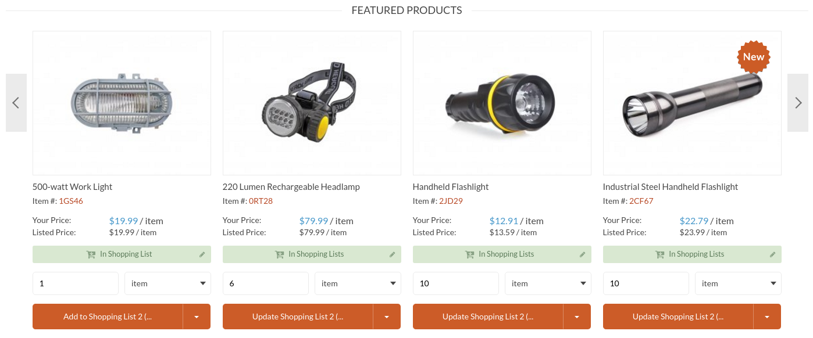
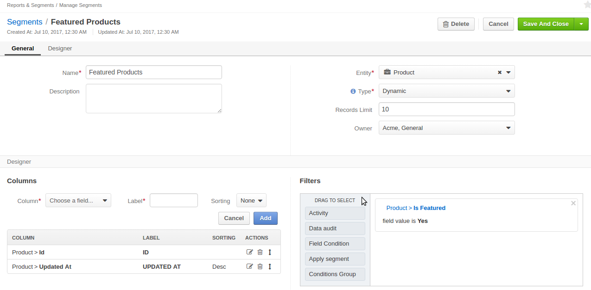

You can mark some of the products as featured to display them in the Featured Products block on the main landing page (home page) in the storefront.
You can customize the way products are filtered for the featured products block by doing the following:
To enable showing different products as featured on some websites, you may create a new segments with custom filtering conditions and configure the organization or website to use the customized version instead of the default one.
To create a new custom segment for featured products:
Navigate to Reports & Segments > Manage Segments in the main menu.
Click Create Segment on the top right of the page.
Configure a new segment to have a distinct name and the necessary filtering condition. For more detailed steps, please see Create Segment topic.
Sample Featured Products segment (default configuration)
Click Save.
Now you can enable this segment to be the source of featured products in the website or organization configuration.
To mark a product as featured:
To remove a product from Featured Products block, set Is Featured to No in the product details:
Configuring the Feature Product segment can be done globally, per website and organization.
You can control which segment is used to store featured products globally by default.
To customize the segment for featured products that is used by default for or organizations and all websites:
Note
For faster navigation between the configuration menu sections, use Quick Search.
The following page opens:
To customize the segment option:
- Clear the Use Default check box next to the option.
- Select the new segment from the list.
Click Save.
You can control which segment is used to store featured products by default.
To update the featured products segment for a particular organization:
Note
For faster navigation between the configuration menu sections, use Quick Search.
To customize the segment option:
- Clear the Use Default check box next to the option.
- Select the new segment from the list.
Click Save.
You can control which segment is used to store featured products by default.
To update the featured products segment for a particular website:
Note
For faster navigation between the configuration menu sections, use Quick Search.
The following page opens:
To customize the segment option:
- Clear the Use Default check box next to the option.
- Select the new segment from the list.
Click Save.